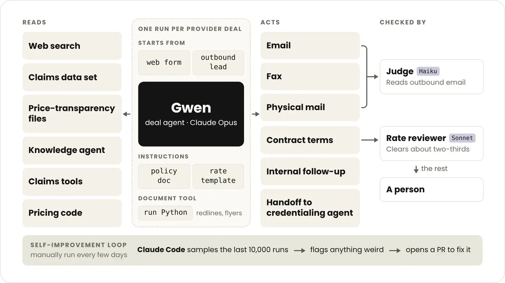

簽約 agent：50 倍速度靠三個 agent 互相把關
導讀原文：〈How Curative is building a national provider network with agents on Claude〉——廠商客戶案例（Anthropic 部落格），含 Curative 執行長 Fred Turner 訪談
把「一份合約一個人」換成「一份合約一個 agent」，難的不是談判，是讓它不准亂講價。
Curative 賣僱主健康險，完成 Baseline Visit 後網路內就醫零自付額。它原本是實驗室起家，估計做過全美約一成的新冠檢測。
因為替幾乎所有保險公司做過檢測，它反而看清了醫療支付體系的低效，才決定自己當支付方。
英國出身的創辦人習慣「病人不付費」的制度，這個背景解釋了它為何執著於預防與零自付額。
要賣全國就得有全國的醫療提供者網路。以每年 2,000 份的速度，執行長 Fred Turner 說是「三十年的工程」。
他的觀察很刺：全國性網路沒幾家，而且全都是三十年前建的，因為這件事本來就慢。
只加人補不上這個缺口，於是把整條流程交給 agent：主力叫 Gwen，一次只跑一家提供者。

三個 agent 的分工，比直接放寬 Gwen 的費率授權有效
Gwen 主要跑在 Claude Opus 上，每次只處理一家提供者，其他合約不會滲進來影響判斷。
它可以讀買來的理賠資料與各保險公司依法公布的價格透明檔，拿市場行情跟對方談。
這兩份資料是談判的彈藥：對方看得到行情，就比較難堅持遠高於市場的價格。
想出價高於自家費率模板時，Gwen 得先寫理由，交給跑 Sonnet 的審查 agent 判斷合不合理。
| 角色 | 模型／主體 | 職責 | 原文限定語 |
|---|---|---|---|
| Gwen | Opus（原文 mostly） | 一份合約從接觸到簽名 | 每次只跑一家提供者 |
| 費率審查 | Sonnet | 看 Gwen 的加價理由 | 約三分之二的請求被放行 |
| 發話守門 | Haiku | 每則對外訊息送出前先讀 | 被擋下的會附理由，讓 Gwen 重寫 |
| 人 | 人工（執行長） | 非標準費率最終核准 | 原文：換成人工也一樣會到他手上 |
守門 agent 是踩坑後才加的：Gwen 曾把「最高可出到多少」的內部註記一起寄給對方。
現在每則對外訊息送出前都會被讀過一遍，被擋下的附上原因，讓 Gwen 改寫再試。
Turner 的結論值得記：讓第二個 agent 審查，比直接給 Gwen 更多權限有效。
這句話的實務意義是：多一層審查，換來的是可以放寬主 agent 的授權範圍。
為什麼小診所才是這個架構的受益者
對外開發更難：有些提供者到第 14 封 email、第 9 次傳真才回。
這種持久度靠人做會先放棄；agent 不會因為被忽視而降低跟進頻率。
但 agent 對待大型醫院與單人診所的注意力一樣——因為那一次執行裡，它只有這一家。
於是 Curative 的策略可以轉向大型網路長期忽略的小型提供者，這是人力模式做不到的取捨。
協商時 Gwen 會比對對方的修改稿與自家政策，再寫 Python 把兩邊改動併成最終文件。
整條流程的代價被壓到每份合約約 2,000 萬 token，換算下來是原本成本的十分之一。
「一小時」是從官網填表到簽名的極端值，不是平均；原文未給典型時長。
帶走三件事
分權比放權有效。把審查拆給第二個 agent，勝過直接給 Gwen 更大的費率授權。
守門規則來自事故。發話前檢查會存在，是因為先漏了一次內部註記。
成本要按「每份合約」算。2,000 萬 token 聽起來多，換算下來是原成本十分之一。
導讀為本站編輯內容（AI 摘解自原文與館藏重點，非官方文件）；速度與成本皆為 Curative 自報、無第三方驗證。內容經對照原文的獨立事實審查後發布。